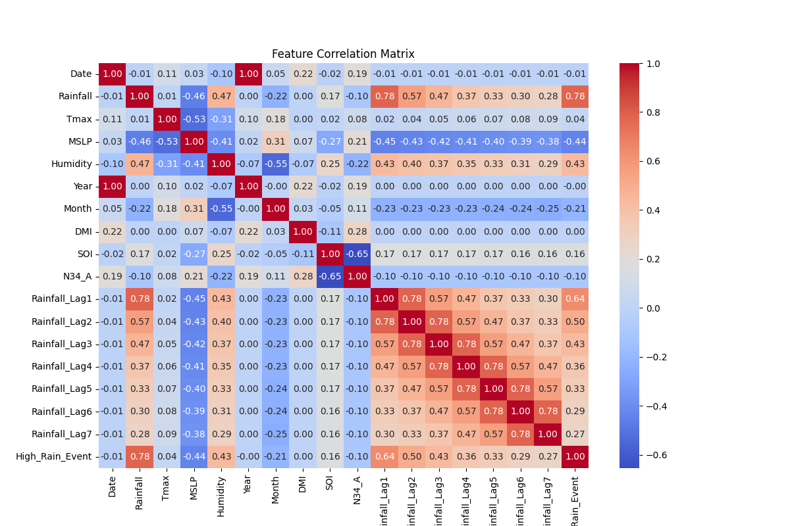

Australian Extreme Rainfall Forecasting
Phase 1-3: Comprehensive Multi-Model Evaluation
System Active
Accuracy
--%F1-Score
--RMSE
-- mmFalse Alarm Rate
--%MAE
-- mmPrecision
--Recall (POD)
--NSE
--Proposed Methodology & System Architecture
The end-to-end framework integrating data preprocessing, multi-model evaluation, and interactive dashboarding.

Prediction vs Observation (LSTM Baseline)

Feature Correlation Matrix
